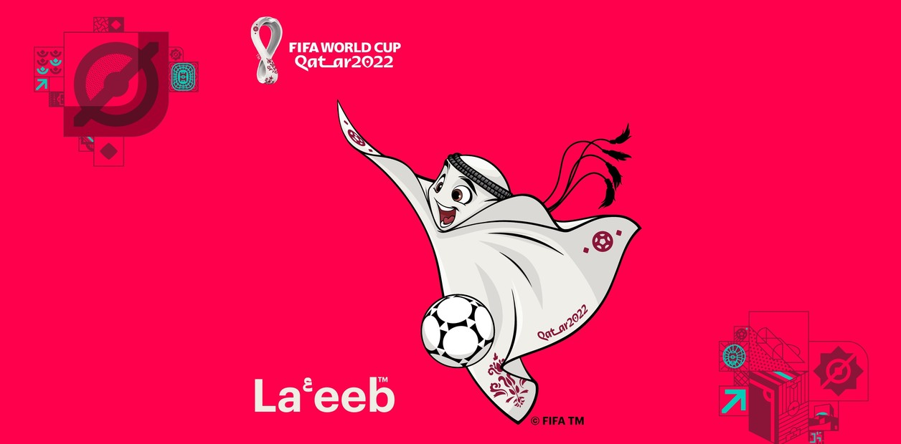
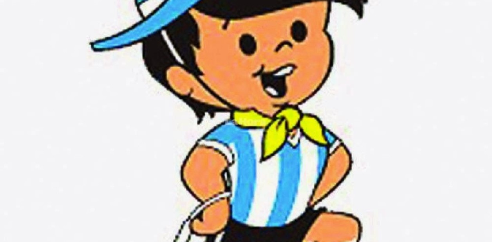
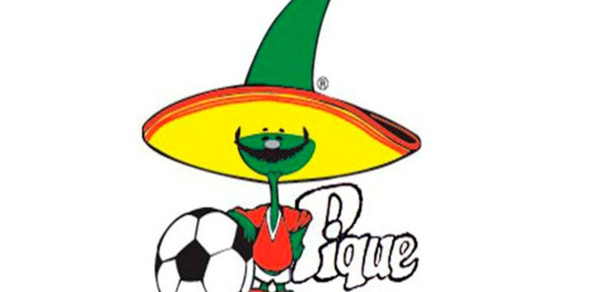
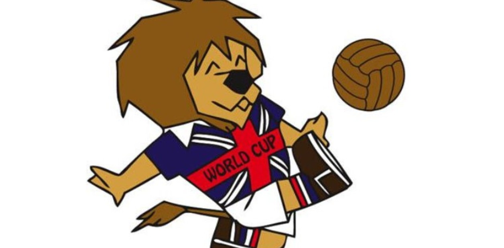

"Estamos encantados de presentar a La'eeb como mascota oficial de la primera Copa
Mundial de la FIFA que
se disputará en Oriente Medio y el mundo árabe. Procede del metaverso de las mascotas, un lugar
indescriptible que cada persona puede imaginar como quiera", expresó Khalid Ali Al Mawlawi, director
general adjunto de Marketing, Comunicación y Experiencias del Comité Supremo de Organización y Legado,
luego de la presentación de la mascota.

Gauchito - Argentina 1978
En la primera Copa del Mundo organizada en el país, Gauchito fue la mascota oficial de Argentina 1978. Si
bien su nombre original era Mundialito, se lo reconoce mundialmente como Gauchito.
El personaje llevaba un sombrero en el que se podía visualizar "Argentina 78" y un pañuelo en el cuello en
homenaje a los gauchos. Además, en su mano derecha portaba un rebenque.

Pique - México 1986
Con la llegada de Pique, México se convirtió en el primer país en tener a dos mascotas oficiales de la
FIFA. Si bien se mantuvo el sombrero, el personaje siguió la temática usada por España y pasó de ser un
niño a un jalapeño gigante con el tradicional bigote mexicano.

Willie - Inglaterra 1966
La primera mascota oficial de la FIFA fue Willie, un león que lucía con los colores de la bandera de Inglaterra
y con las palabras "World Cup" (Copa Mundial) en el centro del pecho.
Su éxito hizo que la organización siguiera con la tradición de tener una mascota en todos los Mundiales.